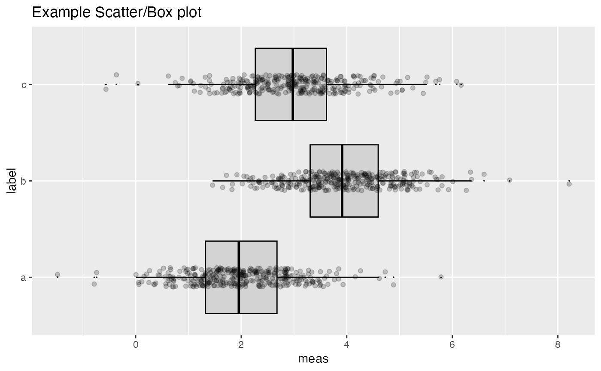

Plot a scatter plot in horizontal mode. xvar is the continuous variable and yvar is the discrete variable (input or model) and
ScatterBoxPlotH(frm, xvar, yvar, title = "", ..., pt_alpha = 0.3)
| frm | data frame to get values from |
|---|---|
| xvar | name of the continuous column in frame |
| yvar | name of the independent column in frame; assumed discrete. if frm[[yvar]] is an integer column, it will be converted to a factor. This means that additional layers that rely on continuous x scales (like geom_smooth) won't work |
| title | plot title |
| ... | (doesn't take additional arguments, used to force later arguments by name) |
| pt_alpha | transparency of points in scatter plot |
classes = c("a", "b", "c") means = c(2, 4, 3) names(means) = classes label = sample(classes, size=1000, replace=TRUE) meas = means[label] + rnorm(1000) frm2 = data.frame(label=label, meas = meas) WVPlots::ScatterBoxPlotH(frm2, "meas", "label", pt_alpha=0.2, title="Example Scatter/Box plot")